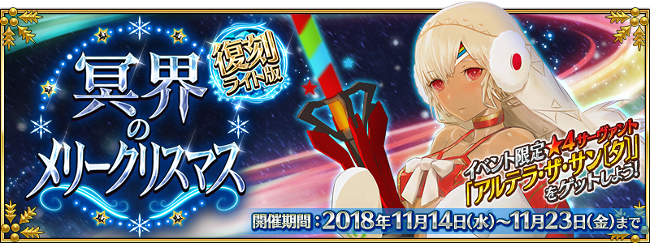


◆活動舉辦期間◆
2018年11月14日(三) 17:00～11月23日(五) 11:59
◆活動概要◆
舉辦期間限定活動「復刻:冥界的聖誕快樂 輕量版」！
為了拯救因突然到訪的異常氣象與連Servant也被侵蝕的謎之熱病而瀕臨全滅危機的迦勒底，在單身前赴那處的Master前現身的新聖誕老人究竟是？
請盡情享受贈予由奈須きのこ執筆完全原創故事的期間限定活動「復刻:冥界的聖誕快樂 輕量版」。
本活動中進行主線關卡進行的話，活動限定Servant「★4(SR)阿提拉・the・San〔誕〕」會以期間限定加入。
另外，在通過主線關卡第8節的通過後，用從禮物陣容入手「軍神交換券」交換的話，就會正式加入。
推進活動，取得「★4(SR)阿提拉・the・San〔誕〕」吧！
另外，活動期間中，會在管理室(ターミナル)出現活動關卡！
除了能享受故事的主線關卡逐日開放外，通過第1節後會開放可反覆刷來獲得活動道具的自由關卡。
挑戰活動關卡收集「冥界之砂」，從阿提拉・the・San〔誕〕收到聖誕禮物吧！
※本活動為再調整2017年舉辦的期間限定活動「冥界的聖誕快樂」更容易遊玩的「復刻輕量版活動」。
※一部份的關卡為日後開放。
◆活動參加條件◆
滿足以下條件的Master才能參加
・通過「第七特異點 絕對魔獸戰線 巴比倫尼亞」
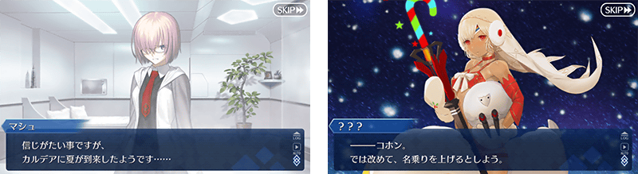
能享受故事的主線關卡會逐日開放。
通過主線關卡第1節的話，會開放可收集活動道具的自由關卡。
之後的自由關卡，靠通過主線關卡來開放。
【主線關卡的舉辦期間】
| 關卡 | 舉辦期間 |
|---|---|
| 主線關卡 第1節～第2節 | 11月14日(三) 17:00～ 11月23日(五) 11:59 |
| 主線關卡 第3節 | 11月15日(四) 17:00～ 11月23日(五) 11:59 |
| 主線關卡 第4節 | 11月16日(五) 17:00～ 11月23日(五) 11:59 |
| 主線關卡 第5節 | 11月17日(六) 17:00～ 11月23日(五) 11:59 |
| 主線關卡 第6節 | 11月18日(日) 17:00～ 11月23日(五) 11:59 |
| 主線關卡 第7節～第8節 | 11月19日(一) 17:00～ 11月23日(五) 11:59 |
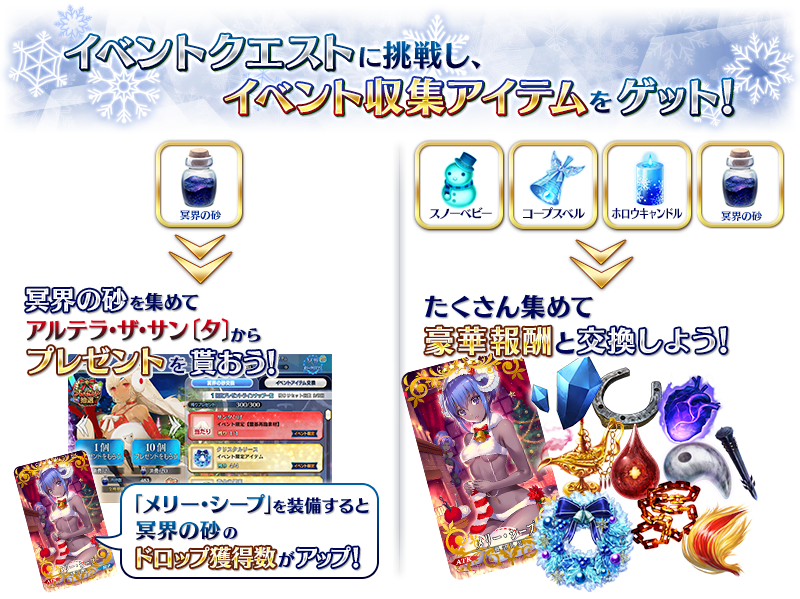
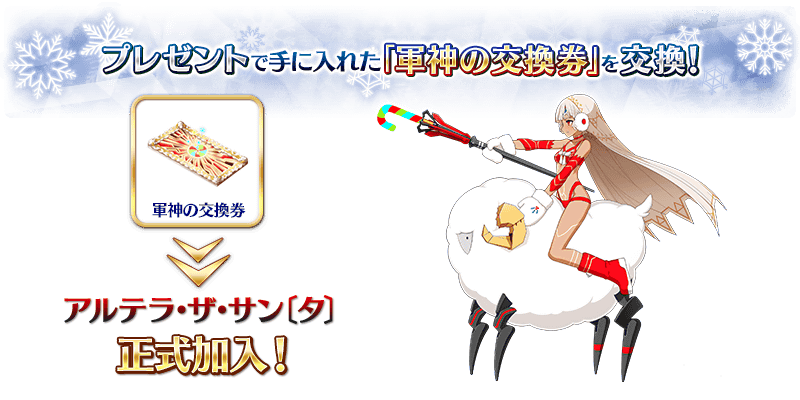
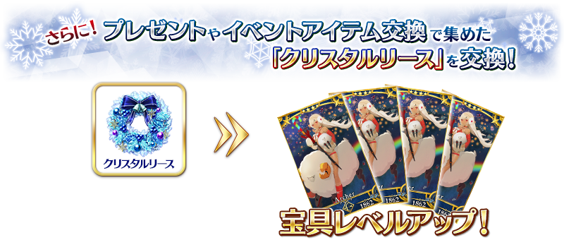
※「軍神交換券」與阿提拉・the・San〔誕〕的交換在主線關卡第8節通過後開放。
※「水晶花圈」與阿提拉・the・San〔誕〕【寶具強化用】的交換在阿提拉・the・San〔誕〕正式加入後開放。

【11月19日(一) 17:00追記】
以通過期間限定活動「復刻:冥界的聖誕快樂 輕量版」主線關卡第8節及「終局特異點」的Master做為對象，開放高難易度的挑戰關卡。
挑戰關卡就算通過後也不會消失，能無數次挑戰，可以變更Servant和概念禮裝的組合後再次挑戰
※關卡通過報酬、戰利品、Master經驗值、魔術禮裝經驗值、絆點數只可在初次通過時獲得。
◆挑戰關卡開放時間◆
2018年11月19日(一) 17:00～
◆挑戰關卡參加條件◆
滿足以下條件的Master才能參加
・通過「復刻:冥界的聖誕快樂 輕量版」的主線關卡第8節
・通過「終局特異點」
◆挑戰關卡初次通過報酬◆
傳承結晶 1個

◆超值攻略方法・其1◆
期間限定活動「復刻:冥界的聖誕快樂 輕量版」的關卡以限定對「★4(SR)阿提拉・the・San〔誕〕」追加特殊效果！
「★4(SR)阿提拉・the・San〔誕〕」在本活動的所有關卡，會提升自身的攻擊威力100%。
◆超值攻略方法・其2◆
將活動加成對象Servant編入隊伍吧！
在本活動做為活動加成篩選器對象的下述Servant，會提升活動收集道具「雪人寶寶」「死屍鈴鐺」「虛空蠟燭」各自的掉落獲得數。
※請注意各關卡的道具掉落率並非100％。
※自11月12日(一) 17:00，在Servant選擇畫面和Servant強化畫面等中，追加「下次活動對象」篩選器。
由於是只顯示在活動活躍Servant的便利功能，敬請活用。
【掉落獲得數提升道具與對象Servant】
| 道具名 | 職階 | 稀有度 | Servant名 |
|---|---|---|---|
| 雪人寶寶 | Archer | ★★★★★ | 伊絲塔 |
| ★★★★ | 阿提拉・the・San〔誕〕 | ||
| Lancer | ★★★★★ | 恩奇杜 | |
| ★★★★★ | 艾蕾修卡 | ||
| ★★★★ | 貞德・Alter・聖誕・Lily | ||
| Rider | ★★★★ | 阿爾托莉亞・潘德拉剛〔聖誕Alter〕 | |
| ★★★ | 牛若丸 | ||
| 死屍鈴鐺 | Caster | ★★★★★ | 梅林 |
| ★★★★ | 吉爾伽美什 | ||
| ★★★ | 馮・霍恩海姆・帕拉塞爾斯 | ||
| Shielder | ★★★ | 瑪琇・基利艾拉特 | |
| 虛空蠟燭 | Saber | ★★★★★ | 阿提拉 |
| Lancer | ★★★★ | 美杜莎 | |
| ★★★ | 豹人 | ||
| ★★ | 武藏坊弁慶 | ||
| ★★ | 雷奧尼達一世 |

◆超值攻略方法・其3◆
裝備活動限定概念禮裝會提升「冥界之砂」的掉落獲得數！
裝備可在活動道具交換入手的活動限定概念禮裝「メリー・シープ」的話，會提升「冥界之砂」的掉落獲得數。
※請注意各關卡的道具掉落率並非100％。

◆超值攻略方法・其4◆
裝備期間限定概念禮裝會提升活動收集道具的掉落獲得數！
裝備在聖晶石召喚Pick Up的期間限定概念禮裝「スターリー・ナイツ」「パーティー・タイム」「スノー・パイレーツ」的話，會提升活動收集道具「雪人寶寶」「死屍鈴鐺」「虛空蠟燭」各自的掉落獲得數。
※請注意各關卡的道具掉落率並非100％。
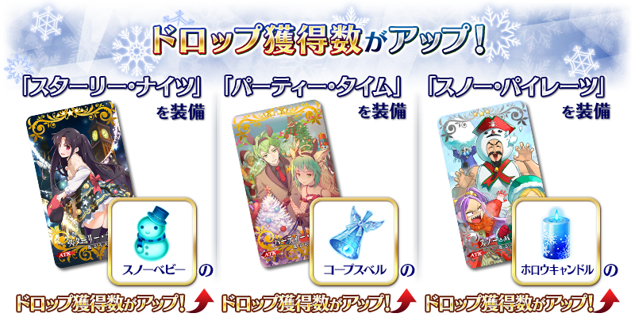
在活動關卡收集「冥界之砂」，於禮物抽選交換禮物！
禮物的交換是以抽選方式進行。
禮物的陣容會各放入1個大獎道具。
抽到大獎道具，點擊「禮物重置」的話，會補充新的大獎道具，切換到下個陣容。
禮物的陣容為全10次！
獲得大獎道具，沒有洗引目光的禮物就點擊「禮物重置」，補充大獎道具吧！
※請注意本活動由於是復刻輕量版活動，「禮物重置」的執行次數有所上限。上限為9次，無法執行第10次以後。
※禮物陣容中的活動收集道具「水晶花圈」除了可交換阿提拉・the・San〔誕〕【寶具強化用】和素材外，在挑戰通過主線關卡第8節後開放的特殊自由關卡時也是必須的。
※「冥界之砂」除了在禮物抽選使用以外，於「活動道具交換」畫面可交換「水晶花圈」「QP」。
◆交換期間◆ 2018年11月14日(三) 17:00～11月28日(三) 11:59 ※交換期間結束後「冥界之砂」會消失。
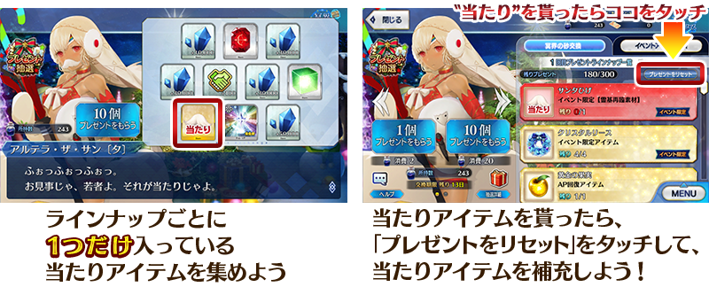
| 陣容次數 | 大獎道具 |
|---|---|
| 第1～4次 |
活動限定靈基再臨素材「聖誕鬍子」 |
| 第5次 | 軍神交換券 |
| 第6次 | 傳承結晶 |
| 第7～10次 | 英靈結晶・日輪之芙芙ALL★4(ATK) |
◆禮物陣容◆
|
【大獎道具】 【活動收集道具】 【技能強化＆靈基再臨素材】 【技能強化素材】 【其他道具】 |
活動收集道具可自點擊管理室(ターミナル)畫面右上「活動報酬」的「活動道具交換」畫面，交換以下的道具。
※英靈結晶・流星之芙芙ALL★4(HP)、500,000QP的交換在通過期間限定活動「復刻:冥界的聖誕快樂 輕量版」主線關卡後開放。
※「冥界之砂」的交換在入手「軍神交換券」後開放。
◆交換期間◆
2018年11月14日(三) 17:00～11月28日(三) 11:59
※交換期間結束後「水晶花圈」「雪人寶寶」「死屍鈴鐺」「虛空蠟燭」「冥界之砂」「軍神交換券」會消失。
◆能用水晶花圈交換的道具◆
 |
【活動限定Servant】 【技能強化＆靈基再臨素材】 【其他道具】 |
◆能用雪人寶寶交換的道具◆
| 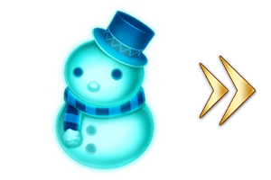 |
【活動限定概念禮裝】 【技能強化＆靈基再臨素材】 【靈基再臨素材】 【其他道具】 |
◆能用死屍鈴鐺交換的道具◆
 |
【活動限定概念禮裝】 【技能強化＆靈基再臨素材】 【靈基再臨素材】 【其他道具】 |
◆能用虛空蠟燭交換的道具◆
 |
【活動限定概念禮裝】 【技能強化＆靈基再臨素材】 【其他道具】 |
◆能用冥界之砂交換的道具◆
|
【活動收集道具】
【其他道具】 |
 |
★★★★★SSR |

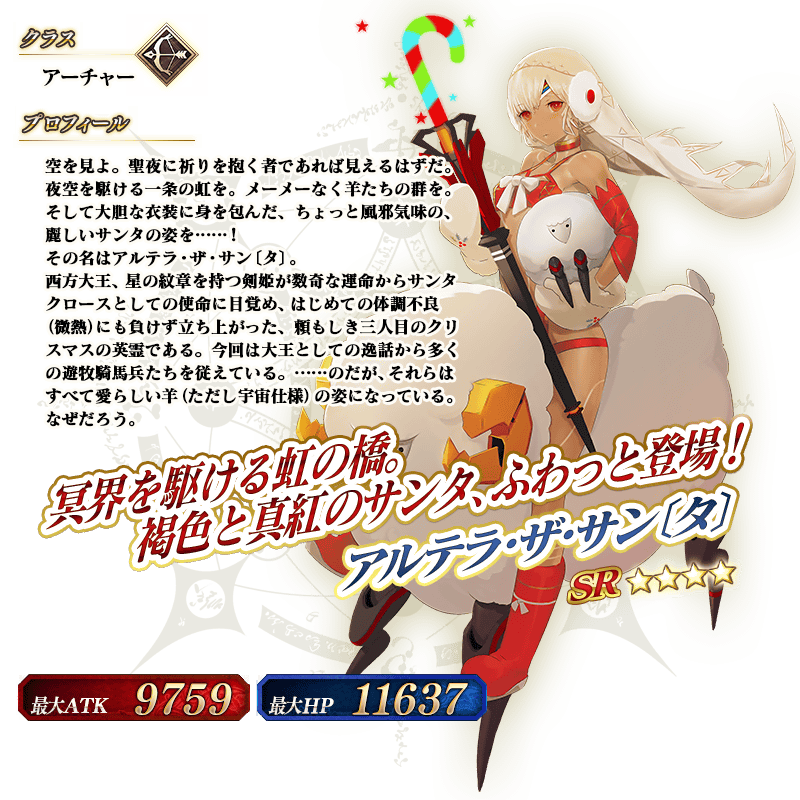
◆靈基再臨◆
使用只能在「禮物抽選」入手可能的「聖誕鬍子」，重複4次靈基再臨的話，卡面會有所變化！

※阿提拉・the・San〔誕〕不會隨靈基再臨使戰鬥角色的外觀變化。
介紹阿提拉・the・San〔誕〕的寶具演出！
在「Fate/Grand Order」官方網站內的公告中，公開了「★4(SR)阿提拉・the・San〔誕〕」的寶具演出。敬請確認。
追加可靠期間限定活動等入手的★4(SR)的活動限定Servant的再入手特典。同活動限定Servant入手「累計6位以上」的話，第6位以後，每新入手1位就贈送稀有稜鏡1個至禮物箱。
※在2018年11月14日(三)以後入手累計第6位以後活動限定Servant為對象。
※★4(SR)以外的活動限定Servant為對象外。
◆追加時間◆
2018年11月14日(三) 17:00～


持有最終再臨後活動限定Servant的狀況，各Servant専用的靈基再臨素材變得可在達文西工房的「特殊靈基再臨素材販賣」交換成QP。 【11月14日(三) 17:00追記】 ◆追加時間◆ 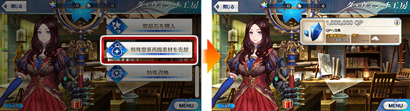
※機械伊莉醬與機械伊莉醬Ⅱ號機的特殊靈基再臨素材「B顆粒」無法販賣。
確認到有著阿提拉・the・San〔誕〕在期間限定活動「復刻:冥界的聖誕快樂 輕量版」從期間限定加入至正式加入之間，界算持有最終再臨的阿提拉・the・San〔誕〕，也無法在「特殊靈基再臨素材販賣」中販賣「聖誕鬍子」的問題。
※遭遇到問題的情況，已確認讓阿提拉・the・San〔誕〕正式加入的話，就可正常販賣。
2018年11月14日(三) 17:00～
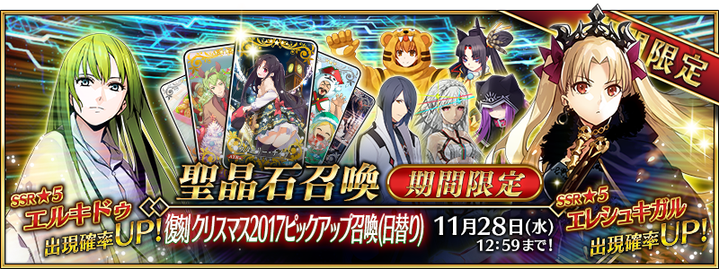
◆「復刻 聖誕節2017Pick Up召喚(每日交替)」期間◆
◆有關Servant的注意◆ Pick Up期間中，期間限定Servant、Pick Up Servant、期間限定概念禮裝的出現機率提升！
期間:2018年11月14日(三) 17:00～11月28日(三) 11:59
舉辦期間限定「復刻 聖誕節2017Pick Up召喚(每日交替)」！
聖誕節「聖誕節2017Pick Up召喚(每日交替)」一部份內容進行復刻。
※未通過「第七特異點 絕對魔獸戰線 巴比倫尼亞」的狀態也能進行「復刻 聖誕節2017Pick Up召喚(每日交替)」。
在期間限定活動「復刻:冥界的聖誕快樂 輕量版」活躍的「★5(SSR)艾蕾修卡」以期間限定登場！
本次Pick Up 7位Servant！
「★5(SSR)阿提拉(Saber)」「★5(SSR)恩奇杜」「★5(SSR)艾蕾修卡」以每日交替Pick Up！
「★4(SR)美杜莎(Lancer)」「★3(R)豹人」「★3(R)牛若丸(Rider)」「★3(R)馮・霍恩海姆・帕拉塞爾斯」常駐Pick Up。
詳情請在聖晶石召喚畫面左下的召喚詳細確認。
做為期間限定概念禮裝「★5(SSR)スターリー・ナイツ」「★4(SR)パーティー・タイム」「★3(R)スノー・パイレーツ」登場！
裝備上述3種的概念禮裝的話，在期間限定活動「復刻:冥界的聖誕快樂 輕量版」中會提升活動收集道具的掉落獲得數。
※艾蕾修卡在Pick Up期間結束後不會追加到故事召喚。
※請注意「復刻 聖誕節2017Pick Up召喚(每日交替)」做為每日交替，艾蕾修卡就算Pick Up期間中也會有不被抽出的日子。
※阿提拉(Saber)、恩奇杜、美杜莎(Lancer)、豹人、牛若丸(Rider)、馮・霍恩海姆・帕拉塞爾斯在Pick Up期間結束後仍會在故事召喚被抽出。
※Pick Up期間中，豹人就算通過第七特異點前也能入手。
◆有關概念禮裝的注意◆
※スノー・パイレーツ在Pick Up期間中，也能在友情點數召喚獲得。
※請注意自友情點數召喚抽出的スノー・パイレーツ在自動變還設定登錄★3(R)概念禮裝的情況，會變成自動變還的對象。
10次召喚中確定1張★4(SR)以上和確定1位★3(R)以上的Servant！
※確定★4(SR)以上包含Servant和概念禮裝。
| 每日交替Pick Up期間 | 每日交替Pick Up內容 |
|---|---|
| 11月14日(三) 17:00～ 11月16日(五) 22:59 |
艾蕾修卡 |
| 11月16日(五) 23:00～ 11月18日(日) 22:59 |
恩奇杜 艾蕾修卡 |
| 11月18日(日) 23:00～ 11月20日(二) 22:59 |
恩奇杜 |
| 11月20日(二) 23:00～11月21日(三) 22:59 | 阿提拉(Saber) |
| 11月21日(三) 23:00～ 11月23日(五) 22:59 |
艾蕾修卡 |
| 11月23日(五) 23:00～ 11月25日(日) 22:59 |
恩奇杜 |
| 11月25日(日) 23:00～ 11月28日(三) 11:59 |
艾蕾修卡 |
※請注意會以每日交替變更Pick Up的Servant。

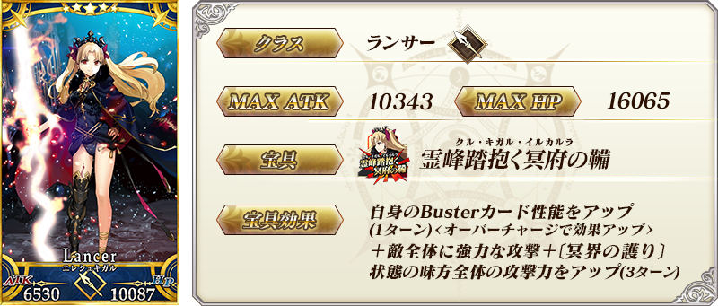
※上述的「★5(SSR)艾蕾修卡」的卡面為靈基再臨第2階段。


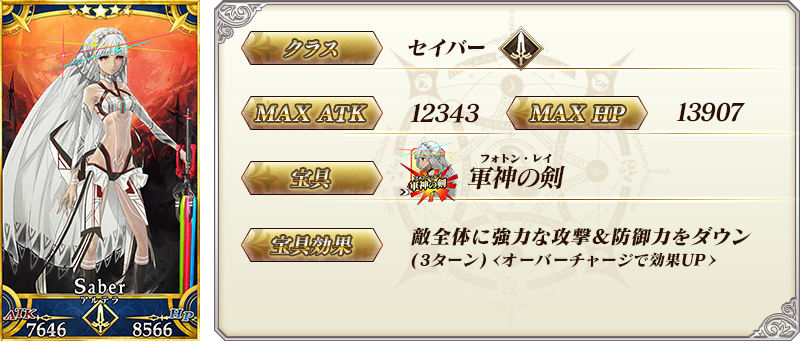
※上述的「★5(SSR)阿提拉(Saber)」的卡面為靈基再臨第2階段。
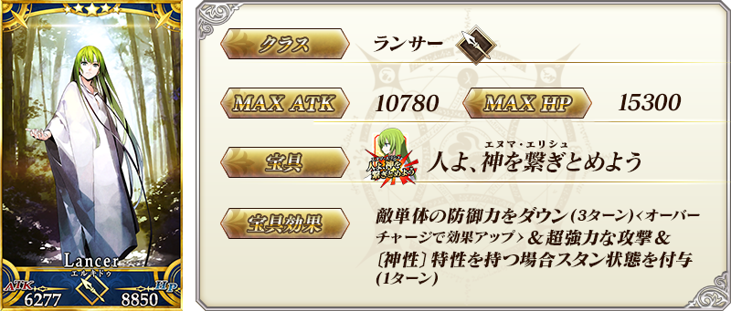
※上述的「★5(SSR)恩奇杜」的卡面為靈基再臨第2階段。


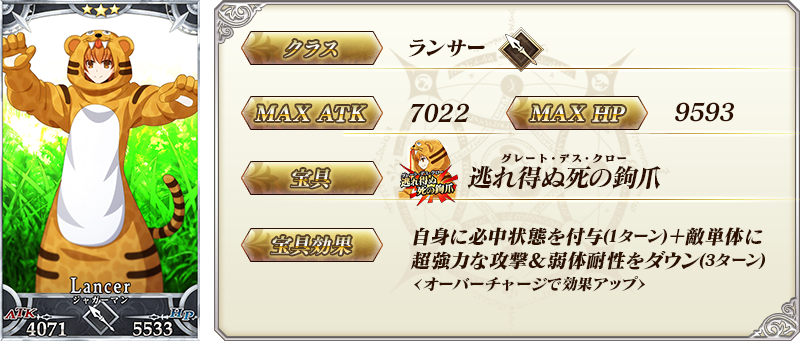
※上述的「★3(R)豹人」的卡面為靈基再臨第2階段。

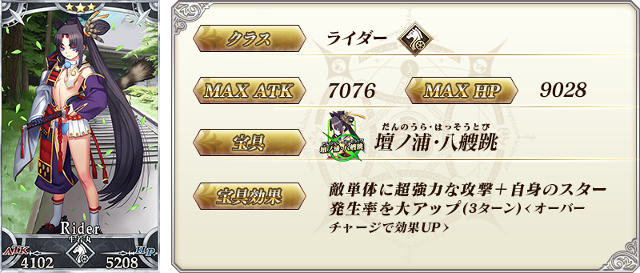
※上述的「★3(R)牛若丸(Rider)」的卡面為靈基再臨第2階段。
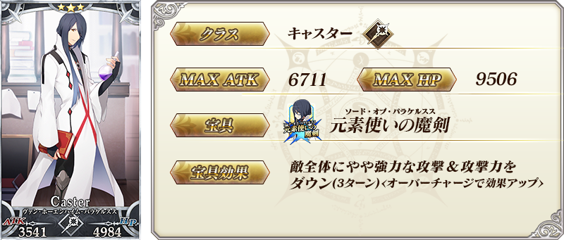
※上述的「★3(R)馮・霍恩海姆・帕拉塞爾斯」為靈基再臨第2階段。
 |
★★★★★SSR |
 |
★★★★SR |

 |
★★★R |
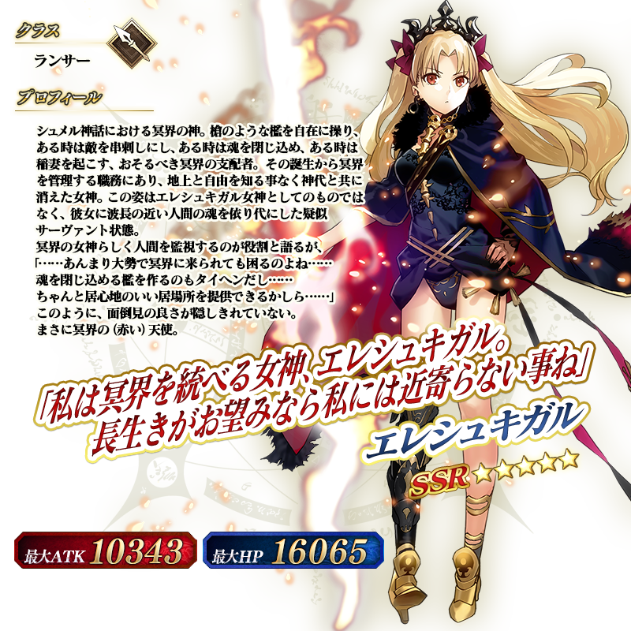
※上述的「★5(SSR)艾蕾修卡」的立繪為靈基再臨第2階段。
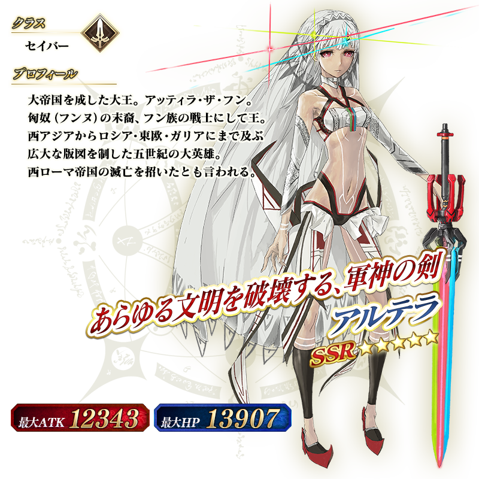
※上述的「★5(SSR)阿提拉(Saber)」的立繪為靈基再臨第2階段。
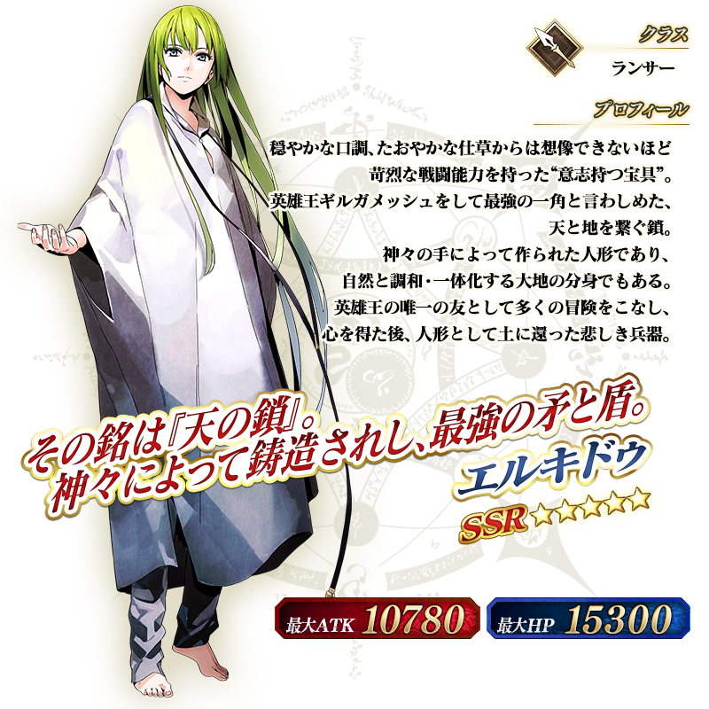
※上述的「★5(SSR)恩奇杜」的立繪為靈基再臨第2階段。
介紹艾蕾修卡、阿提拉(Saber)、恩奇杜、美杜莎(Lancer)的寶具演出！
在「Fate/Grand Order」官方網站內的公告中，公開了「★5(SSR)艾蕾修卡」「★5(SSR)阿提拉(Saber)」「★5(SSR)恩奇杜」「★4(SR)美杜莎(Lancer)」的寶具演出。敬請確認。